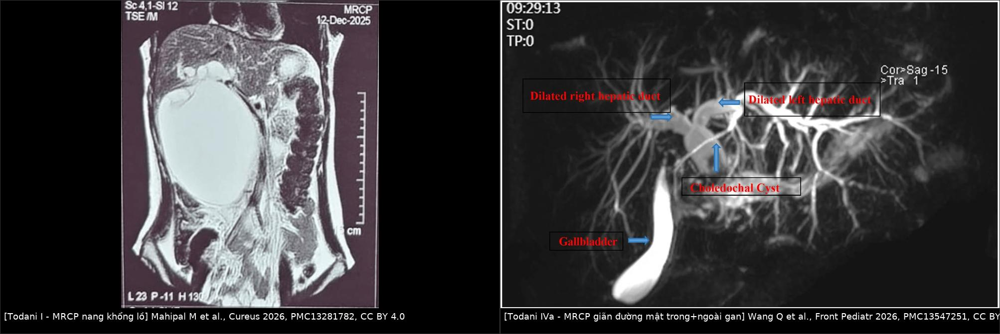
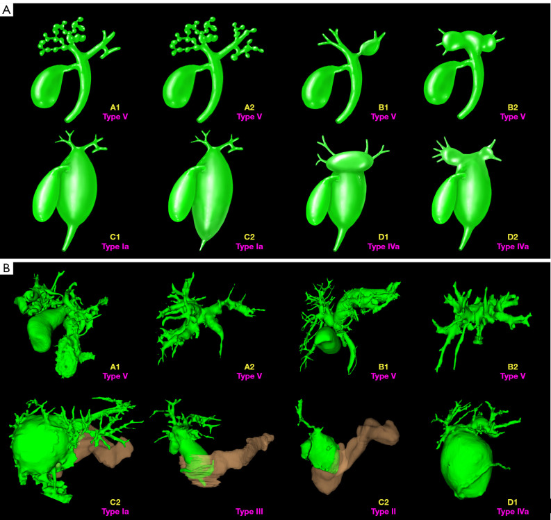
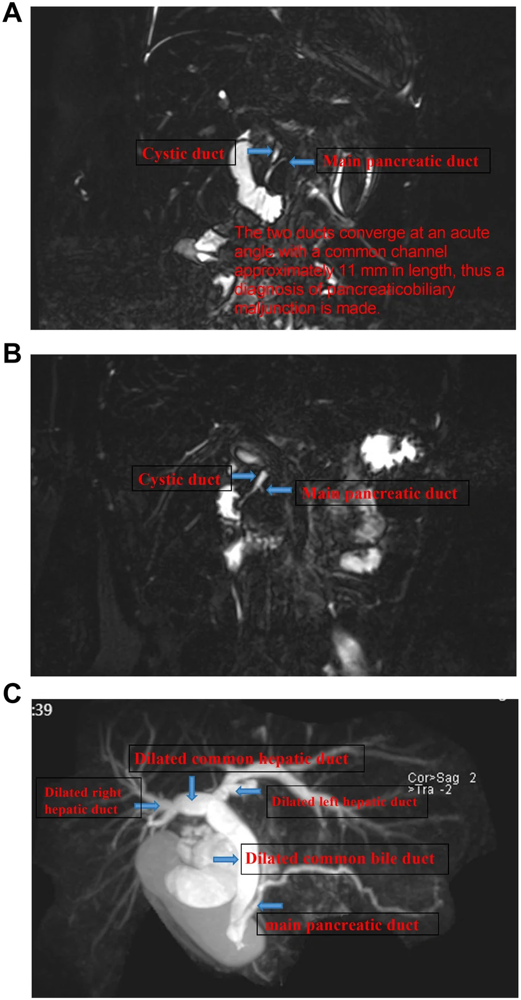
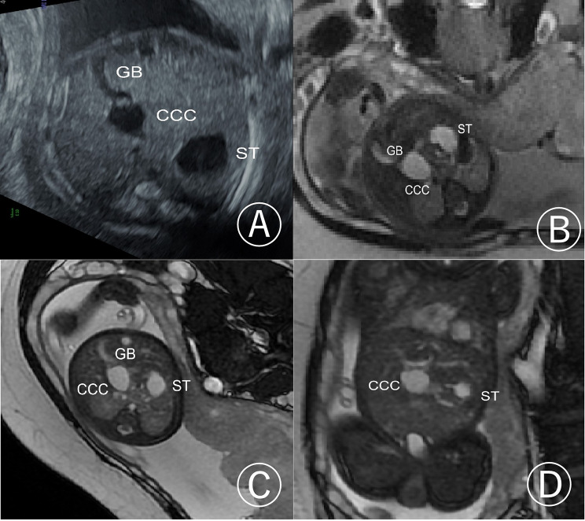
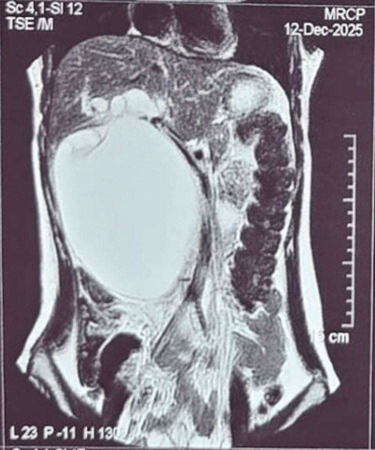
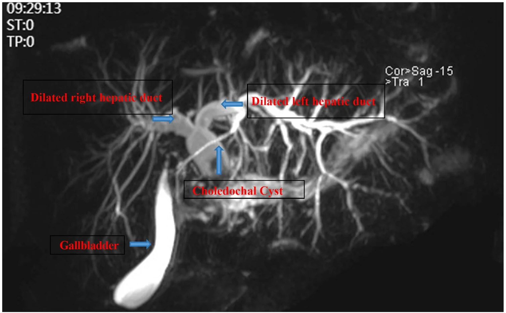

666 — Nang ống mật chủ ở trẻ (Todani I–V): MRCP, hợp lưu tụy–mật & nguy cơ ung thư đường mật / Choledochal cyst
Tags: pattern:nang-duong-mat vung:gan-mat-nhi score:Todani protocol:MRCP protocol:US-bung-nhi incidentaloma:nang-duong-mat
Mức chắc chắn (certainty): tổng hợp y văn (literature synthesis) — tổng hợp review phân loại Todani + các ca nguyên văn có ảnh CC BY/CC BY-NC-ND (ghi rõ PMCID + Fig từng ảnh); số liệu đối chiếu trực tiếp bài gốc, không suy diễn ngoài chú thích.
1. Tổng quan bệnh học – cơ chế hình ảnh
- Nang ống mật chủ (choledochal cyst, CCC) — định nghĩa: giãn dạng nang hay dạng thoi (fusiform) của đường mật ngoài gan và/hoặc trong gan, thường kèm hợp lưu tụy–mật bất thường (pancreaticobiliary maljunction, PBM), hẹp đường mật và sỏi mật (Wang Q et al., Front Pediatr 2026, PMC13547251). Đây là bệnh đường mật bẩm sinh, không phải "u".
- Dịch tễ (định lượng): gặp nhiều ở châu Á, ước tính ~1/1.000 trẻ sinh; nữ trội 3–4:1 (Gu L et al., BMC Med Imaging 2026, PMC13366937; Wang Q 2026). Todani I là thể phổ biến nhất, chiếm 80–90% (Gu L 2026).
- Cơ chế — TẠI SAO hình thành nang (thuyết Babbitt/PBM): ống mật chủ và ống tụy chính hợp lưu ngoài thành tá tràng tạo kênh chung dài (common channel) > 15 mm → dịch tụy (protease) trào ngược vào đường mật → viêm và giãn thành nang (Gu L 2026). Ca minh họa đo kênh chung 11,0 mm (Wang Q 2026). Thuyết này giải thích luôn vì sao PBM là chốt chẩn đoán trên MRCP: kênh chung dài là "dấu vân tay" sinh bệnh học.
- TẠI SAO MRCP nhìn rõ nang (vật lý): mật/dịch nang là nước tự do (mật) hoặc nhầy → T2 rất dài → tín hiệu rất sáng trên các chuỗi nặng T2 (SSFSE/FRFSE, 3D MRCP); trên T1 thường tối (dịch nước), chỉ tăng T1 khi dịch giàu protein/máu trong nang. Vì vậy MRCP không cần cản quang vẫn thấy toàn bộ cây mật — khác CT chỉ thấy "khối nước" đơn thuần, không thấy kênh chung.
- Hình thái học thai (định lượng): trong 31 ca CCC thai, 70,9% nữ; nang hình ellipse ở 26 ca; "dấu đỉnh nhọn" (pointed apex sign) có ở 100% (31/31) ca; bờ dưới nang không vượt bờ dưới gan ở 29/31 ca; hướng chủ đạo phải-trên → trái-dưới 26/31 (Gu L 2026). Nang thai phát hiện được từ tuần 24–30 (Gu L 2026).
- Diễn tiến/bỏ sót — định lượng: nang không mổ có thể tiến triển viêm đường mật, viêm tụy, thủng đường mật (biliary perforation) và về lâu dài tăng nguy cơ ung thư đường mật (cholangiocarcinoma) ở tuổi trưởng thành (Wang Q 2026). Nguy cơ vẫn tồn tại sau khi đã cắt nang: ca ung thư đường mật ngoài gan (eCCA) ở nữ 25 tuổi đã cắt nang từ thời sơ sinh (Hraib M et al., Ann Med Surg 2026, PMC13354358) — nên theo dõi suốt đời, không "cắt xong là hết".
- Tam chứng kinh điển: đau bụng + vàng da + khối bụng — nhưng hiếm khi đủ cả 3, trẻ nhũ nhi thường chỉ vàng da ứ mật hoặc khối bụng.
2. Mẫu hình + chẩn đoán phân biệt theo vị trí (gamut)
Gamut "nang quanh rốn gan/rốn gan (porta hepatis) ở trẻ":
- Nang ống mật chủ (Todani I–IV): nang thông với cây mật; kèm PBM/kênh chung dài; thường vàng da ứ mật tái diễn + viêm tụy.
- Teo đường mật dạng nang (cystic biliary atresia): nang nhỏ, không to lên, niêm mạc túi mật không đều, dấu thừng tam giác ≥ 4 mm — khác CCC (xem 625).
- Nang gan đơn thuần/sán lá gan (hydatid): không thông với đường mật; sán có nang con + vôi hóa thành (xem 139).
- Nang ống mật chủ nội tá tràng (choledochocele = Todani III): "nang" nằm trong lòng tá tràng, thoát vị thành sau; thường đau/viêm tụy tái phát, ít vàng da.
- Ống mật chủ đôi/dị dạng đường mật (biliary anatomical variant), túi mật đôi: cạm bẫy giả nang (xem mục 5).
Gamut "giãn đường mật trong gan (intrahepatic biliary dilatation)":
- Todani IVa (giãn cả trong gan + ngoài gan, hay gặp nhất sau I), Todani V/Caroli (giãn nhiều ổ trong gan + dấu chấm trung tâm — central dot sign = nhánh TM cửa bị vây trong nang), hẹp/xơ sau viêm đường mật tái phát, ung thư đường mật (chít hẹp + nang giãn thượng lưu).
Phân loại Todani (nhớ nhanh):
- I — giãn ngoài gan (Ia dạng nang, Ib khu trú, Ic dạng thoi); II — túi thừa ống mật chủ; III — choledochocele (trong tá tràng); IVa — trong + ngoài gan, IVb — nhiều ổ ngoài gan; V — chỉ trong gan (Caroli).
- Mnemonic theo vị trí: I-II-IVb ngoài gan · III tá tràng · V trong gan · IVa cả hai.
3. Bảng so sánh phân biệt (ma trận đối chiếu)
| Thực thể (entity) | Hình ảnh điển hình | Chốt vào (rule-in) | Chốt loại (rule-out) | Gợi ý xác nhận |
|---|---|---|---|---|
| Todani I (nang/thoi ngoài gan) | Nang lớn ở rốn gan, thông cây mật, túi mật thường; MRCP thấy kênh chung dài > 15 mm (PBM) | Nang thông đường mật + PBM + vàng da ứ mật/viêm tụy tái diễn | Nang không thông đường mật, không PBM → nang gan đơn thuần/sán | MRCP (phân loại chính xác ~96,2%); cắt nang + Roux-en-Y |
| Todani IVa (trong + ngoài gan) | Giãn đường mật trong gan HAI bên + nang/thoi ống mật chủ; hình "cây" trên MRCP | Giãn in-ra 2 bên + nang ngoài gan + PBM | Giãn trong gan khu trú một thùy/không nang → Caroli/hẹp lành tính | MRCP 3D + đo kênh chung; MRCP phát hiện PBM và giãn trong gan tốt hơn US/CT (P < 0,05) |
| Todani V (Caroli) | Nhiều nang trong gan dọc đường mật, dấu chấm trung tâm | Dấu chấm trung tâm + giãn đường mật trong gan dạng túi | Không có nang ngoài gan, không PBM → không phải I/IV | MRCP/CT; tìm xơ gan mật (CHF) + tăng áp cửa |
| Teo đường mật dạng nang | Nang nhỏ (< 1 cm → không to sau sinh), túi mật teo (< 15–19 mm), không co sau bú | Dấu thừng tam giác ≥ 4 mm + túi mật teo/không co + HIDA không thải 24 giờ | Nang > 1 cm và to lên sau sinh + túi mật thường → CCC | Siêu âm lặp + HIDA; Kasai < 60 ngày |
| Nang sán lá gan (hydatid) | Nang con/vỏ tách (water-lily), vôi hóa thành, không thông đường mật | Vỏ tách + nang con + tiền sử dịch tễ | Thông đường mật + PBM → CCC | Siêu âm/CT/MRI + huyết thanh; albendazole + PAIR |
| Ung thư đường mật sau cắt nang | Chít hẹp/mass xâm lấn + giãn đường mật thượng lưu, CA19-9 tăng, nhiều năm sau mổ | Tiền sử cắt nang đường mật + khối xâm lấn + CA19-9 tăng | Nang dạng đơn thuần, bờ đều → tái phát lành tính/hẹp | MRCP + CT; sinh thiết; theo dõi suốt đời |

Trái: nang khổng lồ [Todani I] — Mahipal M et al., Cureus 2026, PMC13281782, CC BY 4.0. Phải: Todani IVa với giãn đường mật trong gan hai bên — Wang Q et al., Front Pediatr 2026, PMC13547251, CC BY 4.0. Ảnh ghép letterbox giữ nguyên tỷ lệ.Phân độ Todani — sơ đồ 3D

Tái tạo 3D cây mật–tĩnh mạch: Ia nang ống mật chủ, II túi thừa, III choledochocele, IVa trong + ngoài gan, V (Caroli) trong gan — Cai P et al., Quant Imaging Med Surg 2026, PMC13457801, CC BY-NC-ND 4.0 (giữ nguyên bản, không ghép).Hợp lưu tụy–mật (PBM) — "chìa khóa" sinh bệnh học

MRCP: ống mật chủ + ống tụy chính hợp lưu góc nhọn ngoài thành tá tràng, kênh chung 11 mm → PBM (tiêu chuẩn kênh chung dài thường > 15 mm) — Wang Q et al., Front Pediatr 2026, PMC13547251, CC BY 4.0.4. Protocol chụp + phân loại Todani
- Siêu âm bụng (đầu tay, trẻ nhịn ăn): đo kích thước nang tại rốn gan, tìm giãn đường mật trong gan, đánh giá túi mật (thường/teo), dấu thừng tam giác (nếu vàng da sơ sinh). Siêu âm kém nhạy với PBM và giãn đường mật trong gan hơn MRCP.
- MRCP/MRI gan–mật (tiêu chuẩn phân loại): chuỗi nặng T2 SSFSE/FRFSE 3D, lát mỏng; đánh giá kênh chung (chiều dài mm), hợp lưu lệch vị trí, giãn trong gan hai bên. Trong cohort 117 trẻ, MRCP phân loại chính xác 96,2% và phát hiện PBM + giãn đường mật trong gan cao hơn US/CT (P < 0,05) (Wang Q 2026).
- CT: hữu ích đánh giá biến chứng (thủng/viêm tụy) và giải phẫu mạch quanh nang; không thay MRCP để phân loại.
- HIDA (khi còn nghi ngờ teo đường mật): không thấy tracer xuống ruột sau 24 giờ gợi ý tắc; nhưng chỉ loại trừ tốt khi thấy tracer xuống ruột (xem 625).
- Phân loại Todani (phiên bản Todani 1977, dùng thống nhất): I–V như trên; IVa hay gặp nhất trong nhóm nhiều ổ (24,0% trong cohort của Wang Q 2026).
- Điều trị (nguyên tắc): cắt toàn bộ nang + nối mật–ruột Roux-en-Y là chuẩn (chiếm 81,7% ở Wang Q 2026); tránh nối nang–ruột đơn thuần (giữ nang → nguy cơ ung thư đường mật). Todani III có thể xử trí nội soi cắt cơ vòng; Todani V (Caroli) thường cắt gan bán phần/ghép gan tùy vị trí.
- Biến chứng sớm sau mổ: tỉ lệ biến chứng sớm chung 16,3% (Wang Q 2026); theo dõi viêm đường mật, hẹp miệng nối, sỏi mới và ung thư đường mật muộn.
flowchart TD
A[Nghi nang ong mat chu - vang da hoac viem tuy tai dien] --> B[US bung: nang tai ron gan]
B --> C{Co vang da so sinh?}
C -->|Co| D[Do thung tam giac + tui mat teo]
C -->|Khong| E[MRCP 3D: do kenh chung, giai phau cay mat]
D --> F{Thung >= 4mm va tui mat teo?}
F -->|Co| G[Teo duong mat dang nang - Kasai truoc 60 ngay]
F -->|Khong| E
E --> H{Phan loai Todani}
H -->|I II IVb| I[Cat nang + Roux-en-Y hepaticojejunostomy]
H -->|III| J[Noi soi cat co vong / cat nang]
H -->|IVa| K[Cat nang + Roux-en-Y + danh gia duong mat trong gan]
H -->|V Caroli| L[Cat gan ban phan hoac ghep gan]
I --> M[Theo doi suot doi: viem duong mat, hep mien noi, ung thu duong mat]
5. Biến thể bình thường và cạm bẫy
- Túi mật đôi / ống mật chủ đôi / gập túi mật: có thể giả "nang" trên MRCP — luôn dò sự liên tục với cây mật và kiểu đổ vào của ống túi mật trước khi gọi nang.
- MRCP lát dày (thick-slab) có thể bị tá tràng đè hình làm mất ống túi mật — trong khi MRCP 3D thấy rõ; đừng kết luận "không có ống túi mật" chỉ vì một chuỗi (Kaynak Şahap S, Fitoz S, Turk J Med Sci 2026, PMC13398544).
- Nang thai có thể thoái triển tự nhiên hoặc teo đường mật dạng nang — vì vậy nang phát hiện trước sinh phải chụp lặp sau sinh, không mổ ngay dựa trên hình thai.
- Cạm bẫy "giãn đường mật trong gan = Caroli": Todani IVa giãn trong gan hai bên nhưng có nang ngoài gan + PBM; Caroli không có nang ngoài gan. Dấu chấm trung tâm (nhánh TM cửa bị vây quanh bởi nang) nghiêng về Caroli.
- Cạm bẫy sau mổ: giãn đường mật thượng lưu nhiều năm sau cắt nang không được quy lành tính — nghĩ hẹp miệng nối/sỏi/ung thư đường mật (ca eCCA 25 tuổi sau cắt sơ sinh).
- Thỏa mãn tìm kiếm (satisfaction of search): thấy nang ống mật chủ rồi bỏ qua sỏi ống mật chủ và ung thư đường mật đồng thời — luôn soát thêm sỏi + chít hẹp trên MRCP/CT.
6. Tự lượng giá — Blind Quiz
Ca 1 — Thai 30 tuần, siêu âm thấy cấu trúc dạng nang ở rốn gan. Nhìn ảnh, mô tả trước.

- Gợi ý lâm sàng (clinical context): thai không triệu chứng, phát hiện tình cờ khi siêu âm thai.
- Câu hỏi: Cấu trúc nang nằm ở đâu so với túi mật và dạ dày? 3 chẩn đoán phân biệt trong tử cung? Dấu nào gợi nang ống mật chủ?
Bấm để hiện đáp án (findings + chẩn đoán)
- Dấu hiệu (findings): trên siêu âm ngang (A), cấu trúc nang CCC nằm ngay rốn gan, sát túi mật (GB), cạnh dạ dày (ST); các mặt cắt MRI SSFSE (B, D) và FIESTA (C) xác định rõ quan hệ nang–túi mật–dạ dày.
- Chẩn đoán (diagnosis): nang ống mật chủ bẩm sinh type I (congenital choledochal cyst) — vì nang thông với đường mật tại rốn gan và giữ nguyên tương quan với túi mật; thêm dấu đỉnh nhọn trên mặt cắt dọc giúp chốt (xem ca đối chiếu dưới).
- Đối chiếu dấu đỉnh nhọn:

- Trong 31 ca CCC thai, dấu đỉnh nhọn có ở 100%, nang hình ellipse 26/31, bờ dưới nang không vượt bờ dưới gan 29/31 (Gu L et al., BMC Med Imaging 2026).
- Nguồn ảnh: Gu L et al., BMC Med Imaging 2026, PMC13366937, CC BY-NC-ND 4.0.
Ca 2 — Bé gái đau bụng, bụng to; MRCP có nang lớn. Xem ảnh trước khi kết luận.

- Gợi ý lâm sàng: trẻ có khối vùng bụng trên, đau bụng; MRCP thấy một nang lớn.
- Câu hỏi: Nang có thông với cây mật không (bằng chứng nào)? Đây là thể Todani nào? Xử trí?
Bấm để hiện đáp án (findings + chẩn đoán)
- Dấu hiệu (findings): nang khổng lồ chiếm gần hết bụng trên phải, tín hiệu rất sáng trên MRCP (dịch T2 dài), liên tục với đường mật rốn gan.
- Chẩn đoán (diagnosis): nang ống mật chủ (choledochal cyst) — nang thông với cây mật khác nang gan đơn thuần; đây là ca nang "khổng lồ" đã được phẫu thuật cắt nang + Roux-en-Y.
- Xử trí: cắt toàn bộ nang + nối mật–ruột Roux-en-Y; theo dõi suốt đời vì nguy cơ ung thư đường mật muộn.
- Nguồn ảnh: Mahipal M et al., Cureus 2026, PMC13281782, CC BY 4.0.
Ca 3 — Bé gái viêm tụy tái diễn; MRCP đường mật giãn. Đọc ảnh có chú thích.

- Gợi ý lâm sàng: đau bụng/viêm tụy tái diễn, MRCP thấy đường mật giãn.
- Câu hỏi: Giãn ở đoạn nào (trong gan/ngoài gan)? Nếu cộng thêm túi mật giãn + nang ống mật chủ thì gọi Todani thể mấy? Vì sao phải tìm kênh chung?
Bấm để hiện đáp án (findings + chẩn đoán)
- Dấu hiệu (findings): giãn đường mật gan phải và gan trái (hai bên) + nang/thoi ống mật chủ; túi mật căng. Ảnh chú thích ghi rõ "dilated right/left hepatic duct" và "choledochal cyst".
- Chẩn đoán (diagnosis): Todani IVa (giãn cả trong gan hai bên và ngoài gan) — vì có cả giãn in-ra hai bên và nang ngoài gan; tổ hợp này chiếm 24,0% trong cohort nhi của Wang Q. Kênh chung dài/PBM phải tìm vì đó là cơ chế trào ngược dịch tụy (ca điển hình 11 mm).
- Nguồn ảnh: Wang Q et al., Front Pediatr 2026, PMC13547251, CC BY 4.0.
Bài liên quan chéo
- 600 – Tổng quan Hệ Nhi khoa (bảng DDx bụng–gan mật nhi)
- 625 – Vàng da tắc mật sơ sinh: teo đường mật vs viêm gan (phân biệt nang ống mật chủ vs teo đường mật dạng nang)
- 626 – Viêm tụy cấp ở trẻ (nang ống mật chủ, tụy divisum) (CCC là nguyên nhân giải phẫu của viêm tụy)
- 665 – Khối u gan ở trẻ em (gamut khối gan nhi)
- 624 – Chấn thương gan–đường mật nhi (DDx cấp cứu quanh gan)
- 641 – Theo dõi hậu phẫu Kasai (viêm đường mật, tăng áp lực cửa)
- 131 – Tắc mật: sỏi OMC vs Klatskin (người lớn)
- 123 – Nang gan & bệnh gan đa nang (Caroli) (Todani V/Caroli)
- 139 – Sán lá gan (hydatid) (DDx nang gan không thông đường mật)
Ảnh
- Tên file:
666_nang-omc_<modality>_<PMCID>-FigN-.... Nguồn + giấy phép từng ảnh trongimages/CREDITS.mdvàsources.md. - Ảnh CC BY 4.0 dùng cho ảnh ghép (
composite_omc-typeI-vs-typeIVa.jpg); ảnh CC BY-NC-ND (PMC13366937, PMC13457801) giữ nguyên bản, không ghép. - Không tải Google Images/AuntMinnie; nguồn đóng chỉ dẫn link ở
sources.md.
Không dùng để chẩn đoán độc lập khi chưa có người hướng dẫn.